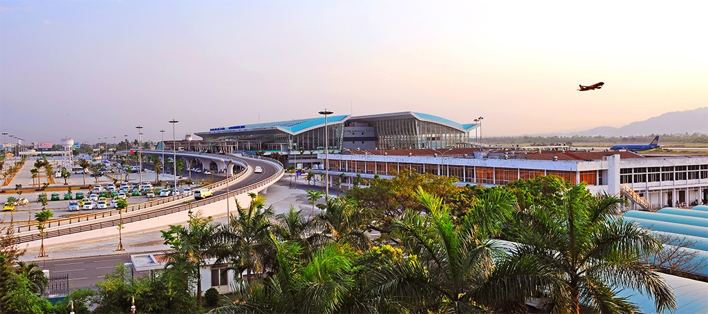

Tổng Quan Đà Nẵng

Thành phố Đà Nẵng nằm ở miền Trung Việt Nam với khoảng cách gần như chia đều giữa thủ đô Hà Nội và thành phố Hồ Chí Minh. Đà Nẵng còn là trung tâm của 3 di sản văn hóa thế giới là Cố đô Huế, phố cổ Hội An và thánh địa Mỹ Sơn. Bắc giáp tỉnh Thừa Thiên – Huế, Tây và Nam giáp tỉnh Quảng Nam, Đông giáp Biển Đông. Đà Nẵng nằm ở trung độ đất nước, trên trục giao thông Bắc – Nam về đường bộ, đường sắt, đường biển, đường hàng không và điểm cuối của Hành lang Kinh tế Đông Tây trải dài từ Việt Nam, Lào, Thái Lan và Burma (Myanmar). Thành phố có diện tích 1.256,53 km² gồm 06 quận (Hải Châu, Thanh Khê, Liên Chiểu, Ngũ Hành Sơn, Sơn Trà, Cẩm Lệ) và 02 huyện Hòa Vang, huyện đảo Hoàng Sa. Dân số: 1.029.000 người (theo điều tra dân số 2015).Giờ địa phương: UTC + 07:00
1. Đa dạng về cảnh quang thiên nhiên
Đà Nẵng là một thành phố biển với bãi biển dài hơn 60 km. Với bãi biển đẹp, trải dài thoai thoải và cát trắng miên man, Biển Đà Nẵng được tạp chí Forbes của Mỹ bình chọn là 1 trong 6 bãi biển quyến rũ nhất hành tinh. Ngụp lặn trong nước biếc, nô giỡn với những con sóng và tắm nắng trên bãi cát trắng mịn đủ để mang lại cho bất kỳ ai cảm giác thư giản sau những giờ làm việc. Không những vậy, có rất nhiều dịch vụ biển cho bạn trải nghiệm như canoing, dù kéo, lướt ván, chèo thuyền chuối, motor nước, lặn biển ngắm san hô.

Không chỉ trứ danh bởi những bãi biển đẹp, Đà Nẵng cũng mang nét hấp dẫn riêng biệt bởi vị thế tựa lưng vào dải Trường Sơn hùng vĩ, lại có bán đảo Sơn Trà vươn ra biển. Nhờ vậy, Đà Nẵng có con đèo Hải Vân được mệnh danh “Thiên hạ đệ nhất hùng quang” với cảnh quang nhìn ra biển vô cùng ngoạn mục và những khúc lượn hiểm trở. Từ ngày hầm đường bộ Hải Vân dài nhất Việt Nam được đưa vào sử dụng, xe cộ lưu thông Bắc Nam dễ dàng và an toàn hơn trước và đèo Hải Vân dần trở thành điểm đến của những người say mê thưởng ngoạn thiên nhiên hay cho những “cua rơ” muốn thử sức trên những con đèo dốc lượn.

Đà Nẵng còn có thương hiệu du lịch Bà Nà Hills. Được khám phá và xây dựng từ thời Pháp thuộc, khu du lịch Bà Nà ngày càng hấp dẫn du khách với hệ thống cáp treo đạt 2 kỷ lục thế giới và khu vui chơi giải trí trong nhà lớn nhất Đông Nam Á – Fantasy Park (Sun World Danang Wonders).
Bà Nà nằm về phía Tây thành phố còn hướng về phía Đông Bắc, du khách tiếp tục khám phá bán đảo Sơn Trà – khu rừng giữa thành phố với hệ động thực vật phong phú, với những bãi tắm hoang sơ mấp mô ghềnh đá. Rồi ngược về Đông Nam lại là danh thắng Ngũ Hành Sơn, không chỉ chứa đựng vẻ đẹp thiên nhiên mà còn có bề dày giá trị văn hóa và tôn giáo.

2. Môi trường sống thân thiện và sôi động
Không chỉ được thiên nhiên ưu đãi cho nhiều cảnh quang đẹp, Đà Nẵng còn là một thành phố đáng sống bởi sự trong lành và yên bình nơi đây. Từng liên tục giữ thứ hạng cao nhất nước về tốc độ phát triển kinh tế nhưng Đà Nẵng vẫn duy trì tốt an ninh trật tự, không có người lang thang xin ăn, không có người nghiện ma túy trong cộng đồng và rất hiếm khi xảy ra tình trạng kẹt xe. Đó là lí do mà du khách hoàn toàn thoải mái và yên tâm khi đi dạo khắp thành phố. Đến với Đà Nẵng, du khách sẽ được thưởng thức nhiều món ăn đặc sản như mì Quảng, bánh tráng thịt heo, hải sản tươi sống ở hơn 150 nhà hàng cao cấp và đạt chuẩn.
Hiện nay, thành phố Đà Nẵng đang đưa các hoạt động giải trí vào du lịch: trải nghiệm cảm giác đêm Đà Nẵng trên phố du lịch Bạch Đằng, thưởng thức các chương trình biểu diễn nghệ thuật truyền thống, tham gia các hoạt động vui chơi giải trí sau 24h. Đà Nẵng hiện có sân golf 18 lỗ đã đạt nhiều giải thưởng quốc tế sẵn sàng đáp ứng sở thích của những yêu golf. Với mục tiêu trở thành thành phố sự kiện, Đà Nẵng đã xây dựng các sự kiện du lịch lớn, trong đó Cuộc thi Trình diễn Pháo hoa Quốc tế – nơi phô diễn những màn pháo hoa tuyệt đẹp đến từ các nước đã trở thành sản phẩm đặc trưng của Đà Nẵng. Vào tháng 5/2011, Đà Nẵng lần đầu triển khai Cuộc thi dù bay Quốc tế. Tiếp đến tháng 6 là sự kiện “Điểm hẹn mùa hè” thường niên, quy tụ những hoạt động giải trí biển, thỏa mãn kỳ nghỉ hè của du khách.

3. Dễ tiếp cận
Rất thuận lợi cho du khách đến với Đà Nẵng. Đà Nẵng có sân bay quốc tế với công suất 6 triệu khách/năm và hiện có nhiều đường bay trực tiếp quốc tế. Cảng nước sâu Tiên Sa là nơi thường xuyên tiếp nhận du thuyền cao cấp, đưa du khách đến với Đà Nẵng. Đà Nẵng còn là trạm dừng chính của các tuyến xe lửa và xe khách.
4. Thành tựu và định hướng
Trong 6 tháng đầu năm 2017, tổng lượt khách tham quan, du lịch đến Đà Nẵng ước đạt 3.229.476 lượt, tăng 33,2% so với cùng kỳ 2016, đạt 51,3% kế hoạch năm 2017; trong đó khách quốc tế ước đạt 1.222.398 lượt, tăng 72% so với cùng kỳ 2016, khách nội địa ước đạt 2.007.079 lượt, tăng 17,1% so với cùng kỳ 2016. Tổng thu du lịch ước đạt 2.007.079 lượt, tăng 17,1% so với cùng kỳ năm 2016, đạt 51,3% kế hoạch năm 2017. Trong 6 tháng đầu năm 2017, lượng khách đường bộ Thái Lan, Lào đến Đà Nẵng ước đạt 4.470 lượt khách; khách du lịch đường hàng không đến Đà Nẵng ước đạt 726.360 lượt khách, tăng gấp 2,2 lần so với cùng kỳ năm 2016 (năm 2016 đạt 325.140 lượt); đón 44 chuyến tàu du lịch cập cảng Tiên Sa, tổng lượt khách ước đạt 52.203 lượt khách, tăng 24% so với cùng kỳ năm 2016.
Theo quy hoạch được phê duyệt, từ nay đến năm 2015, thành phố Đà Nẵng sẽ ưu tiên phát triển các ngành thương mại, dịch vụ, du lịch; đưa du lịch trở thành ngành kinh tế mũi nhọn; phát triển theo 3 hướng chính: Du lịch biển, nghỉ dưỡng và du lịch sinh thái, Du lịch văn hóa, lịch sử, thắng cảnh, làng quê, làng nghề, Du lịch công vụ, mua sắm, hội nghị, hội thảo. Mục tiêu đến năm 2015 đón 4 triệu lượt khách, trong đó có 1 triệu khách quốc tế, với tổng số phòng khách sạn lên 21 ngàn phòng, trong đó hạng 4, 5 sao là 15.700 phòng.